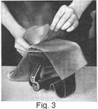
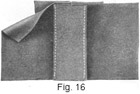
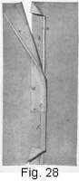

1933—Principles of Tailoring
Woman's Institute of Domestic Arts & Sciences, by Mary Brooks Picken
Tailored Seams and Plackets
PRECAUTIONS IN MAKING TAILORED SEAMS
1. Tailored seams, many kinds of which are used in tailored costumes, require generous seam allowance and careful basting, stitching, and pressing. Their development is not difficult, however, and if you take the time to carry out each detail, you will undoubtedly obtain very gratifying results.
2. Seam Allowance.—Patterns used by tailors are usually of a type that have no seam allowance, a 1-inch seam being provided when cutting, because of the type of seams used in tailoring work. Be guided by this, therefore, and even when using a pattern having the regulation 3/8-inch seam allowance, make provision for the extra seam width necessary. Seam lines are always marked by tracing, chalk, basting, or mark-stitches.
3. Mark-Stitching.—Too much emphasis cannot be laid on the value of mark-stitching along the seam lines that are indicated by the tracing, chalk marks, or basting applied with the pattern in position on the material, as this stitching will mark both sides of the garment exactly alike and show accurate positions for pockets or trimming features that are to be the same on both sides of the garment.
The method of making mark-stitches is shown in Fig. 1. Take a short stitch through the two thicknesses of material, and over this take a back-stitch of the same length, as at a, leaving a good-sized loop, as shown. Skip ¾ inch and repeat. After basting the entire length of the seam in this way, draw the two thicknesses of material apart and cut the threads between them, as at b and c. Then short threads will be left in each piece to mark the pattern line accurately and the two pieces will be marked exactly alike.
It may seem to some persons that mark-stitching takes too much time; but it is the only way in which to make sure of a clean, exact line for basting or stitching in woolen materials, and the personal satisfaction derived in putting together a garment that has been carefully mark-stitched more than repays for the time consumed.
4. Basting.—Before basting the seams, to prevent stretching one edge and thus making it longer than the other, pin the edges together at frequent intervals, inserting the pins perpendicularly to the seam line so that they will not cause annoyance while the basting is being done. Then baste with short stitches, being careful not to stretch the seam.
5. Stitching.—For stitching woolen, use silk or mercerized cotton thread that is a tone darker than the fabric. Some of the extremely dark shades, particularly the darkest blue, may satisfactorily be stitched with black thread; as a rule, however, thread can be matched to fabric with little difficulty. In any event, in selecting thread, consider the fact that it will work up a little lighter than it appears on the spool. The proper way in which to secure a perfect match is to lay a single thread across the material in good daylight or under one of the lamps provided by some shops.
Another good point to remember in connection with thread used for tailored seams is that the manufacturer numbers the colors on the spools; therefore, if you need to procure more thread of exactly the same color, note the number on the spool you have emptied and be sure to purchase the same one.
6. Before starting to stitch, test the machine-stitching on a scrap of material like that used for the garment in order to make sure that the tension, the length of the stitch, and the size of the needle are correct. Very fine stitching is not suitable for tailored garments, as it draws the material down and mars the smooth surface. Very long stitches, too, should be avoided, but they are permissible when the stitching is intended for decorative purposes, this, as a rule, requiring heavier silk than would otherwise be used.
In stitching, strive always for extreme accuracy. The marked seam line will serve as a guide when you are applying the first stitching on the wrong side, this stitching being required for most seams; but when stitching on the right side, use a sewing-machine gauge or quilter or mark the line you wish to follow, unless your eye is sufficiently well-trained to gauge spaces properly.
Attention must be given to the adjustment of the gauge or quilter. Be guided by your sewing-machine instruction book when placing either attachment in position, being careful to adjust the quilter just high enough to permit the material to pass freely under it. On some sewing machines, you will find it impossible to adjust the gauge or the quilter on the left-hand side of the presser-foot, and, in some cases, if you use the quilter as a gauge, you will have to turn it backwards. In such instances, extreme care must be taken to follow exactly along the edge that is to be stitched.
7. Pressing.—Pressing, too, is of decided importance. In making tailored seams, press each stage of the work as you advance, always pressing lengthwise of the seam and making it as flat as possible. Also, press the finished seams. As a general rule, the pressing should be done entirely on the wrong side of the material.
KINDS OF SEAMS
8. Plain Seam.—The plain seam is used even more extensively in woolen materials than it is in wash fabrics. Many distinctive dresses are assembled by means of plain seams, not a stitch showing anywhere on the outside of the garment. When such is the case, the responsibility of the seams is very great, for it is through the perfection of their making and pressing that they take their place inconspicuously in a tailored garment.
To make a plain seam, place the right sides of the material together so that one mark-stitched seam line is directly over the other; then baste along the mark-stitched line and, after the fitting of the garment, stitch on the basted line.
In order to finish such a seam in woolen material, open it out, as shown in Fig. 2, and then press well on the wrong side with a moderately hot iron, or, if the material is not heavy, you may turn the seam edges together to one side if you wish. In some cases, it is not necessary to use any moisture in order to press the seam open satisfactorily, but if you find it difficult to make the seam edges lie flat without first dampening them, run a slightly moistened sponge or sponge cloth along the opened seam and then press it. The use of considerable moisture in the pressing of seams takes from the softness of finish that is generally desirable in women's garments.
9. Instead of pressing seams in velvet or in woolen fabrics having a nap that is not pressed flat, steam them open by running them over the edge of an inverted hot iron that has been covered with a damp cloth, as shown in Fig. 3. The velvet presser described in Art. 18, Chapter I, is, of course, satisfactory, too.
10. Finish the edges of a plain seam by notching, pinking, overcasting, or binding them, according to the nature of the fabric, notching or pinking closely woven fabrics, such as flannel and broadcloth, binding those that fray readily, and overcasting those that do not require binding and yet need a more lasting finish than notching or pinking would provide.
11. Single-Stitch Seam.—The single-stitch seam, illustrated in Fig. 4, makes an attractive finish for a plain seam. To make this seam, first carefully press and baste both edges back from the stitched line of the plain seam; then stitch accurately on both sides the distance from the seam line you desire. The presser-foot of the sewing machine serves as a good guide in doing such work. It is well first to stitch along the right side of the seam, keeping the edge of the presser-foot in line with the plain seam, and then, when this side is stitched, to repeat the operation on the other side of the seam line.
12. Double-Stitch Seam.—To make the double-stitch seam. which is illustrated in Fig. 5, baste as for a single-stitch seam; then baste back 3/8 inch or more on each side of the first basting. Add stitching on both sides of the plain seam as close to it as possible, making a single-stitch seam; and then stitch back 3/8 inch or more on each side of the first stitching, as shown in the illustration.
13. Cord Seam.—Make the cord seam, Fig. 6, as follows: Baste a plain seam, but do not stitch it, as the outside stitching is all that is necessary; then, instead of pressing the seam open, turn seam edges to one side and baste them. Next, with the presser foot of the machine as a guide, stitch 1/8 to ¼ inch from the seam edge through the three thicknesses. When the basting is removed, the effect is similar to that of a corded seam.
Instead of giving the cord seam a final pressing as suggested for tailored seams in general, press merely along the row of stitching, taking care not to let the iron extend over the outer edge, or corded effect, for a flat pressing would make the seam appear as a tuck rather than a cord.
14. Welt Seam.—The welt seam, which is shown in Fig. 7, should be made as follows: First, baste and stitch as in making a plain seam; then cut away one seam edge to within ¼ inch of the stitching, as shown at a, Fig. 8. Next, bind, notch, or overcast the wide seam allowance, and turn both back against the fabric of the garment. With the right side of the material up, as in Fig. 7, press the material away carefully from the seam with the fingers so that it will not overlap in any place. Next, baste along the seam edge and then back ½ inch, or almost the width of the stitching desired. Finally, stitch the desired width, usually 3/8 or ½ inch from the seam, using a sewing-machine gauge or quilter for this purpose, if you wish a guide to insure even spacing.
15. Double-Stitched Welt.—To make the double-stitched welt, an example of which is shown in Fig. 9, follow all the instructions for making a welt seam, and in addition apply a second row of stitching on the seam turn, as is clearly shown at a.
16. Tuck Seam.—The tuck seam, or open welt, as shown in Fig. 10, is made as follows: First baste as a plain seam, but do not stitch. Then turn both seam edges to one side and baste them as in making the cord seam. Then, from the right side, add another row of basting the desired tuck width from the seam edge, as shown in Fig. 11. Place a row of stitching the desired distance, usually ¼ to 1 inch from the seam edge; then remove the basting and mark-stitches, and the seam will appear as a tuck, as in Fig. 10.
17. Slot Seam.—The slot seam, which is illustrated in Fig. 12, requires an allowance of ¾ to 1 inch for each seam edge. Make the seam as follows: baste as for a plain seam, with short, even basting-stitches, and press the seam open. Then cut a strip lengthwise of the material, making it a little longer than the seam and ½ inch wider than the pressed-open seam measures from one edge to the other, as shown in Fig. 13. Place the right side of the strip to the wrong side of the garment, pin the center of the strip directly under the seam, as at a. Take care that the strip is eased a trifle, as it should not be stretched in the least. Baste from the right side, with diagonal basting, as shown at b, holding the seam firmly with the left hand and thus avoiding any possibility of stretching the strip or the seam. Next, baste and stitch 3/8 to ¾ inch from the seam on each side. When the bastings are removed, the seam will have the appearance of two tuck seams meeting.
If you wish to make the slot seam with inside stitching, as shown in Fig. 12, lift the inside edges of the slot seam, or tucks, and stitch as close to the edge as possible, but do not stitch through the underneath strip.
18. Overlapped Seam.—A method of joining a seam of irregular shape is shown in Fig. 14. To make the overlapped seam, first determine which edge is to be on top, turn it in a seam's width, and baste, as at a. At outward turning points, fold the turn over neatly, as at b, while at inward turning ones, slash the seam allowance, as at c. Clip any curved edges. Lap the two edges, pin at right angles to the seam, as at d, baste, as at e, and then stitch close to the edge of the turn, as at f.
19. Lap Seam.—The lap seam, illustrated in Fig. 15, is used only on heavy, firmly woven materials that do not fray. An allowance of 3/8 to 5/8 inch is necessary for this seam. To make the seam, lap the edges, seam lines coinciding, but do not turn the outside edges under; baste and stitch the outside edges, making the rows of stitching absolutely parallel and stitching as close to the edges as possible, as shown at a and b. Do not use selvage edges.
20. Strap Seam.—The strap seam, an example of which is shown in Fig. 16, is simply a plain seam with a good seam allowance, over which, after the seam has been pressed open, is placed a bias strap of the same or some contrasting material. The procedure in making this seam is as follows:
For the strap, cut a bias piece of the material twice the width that the finished strap is to be; catch the edges together with a diagonal basting-stitch, as in Fig. 17, taking care that the basting does not show on the right side and that the edges do not overlap and cause a ridge after the seam is pressed; and then press the strap, being very careful not to twist it in the least. Next, place the strap directly over the seam on the right side, and baste it in position with diagonal basting, as shown. Finally, baste the outside edges down and stitch on each edge of the strap, so that it will appear, when finished, as in Fig. 16.
Sometimes, on garments where machine-stitching is not desirable, the edges of the strap are slip-stitched down or secured with a decorative stitch.
21. Use of Tailored Seams.—Knowledge of sewing or tailoring processes does not attain its true meaning until it has been put to use. It is essential, therefore, when making up skirts, suits, and coats, or even in some cases dresses, that the proper procedure as regards seams be followed.
The plain seam and the overlapped seam are preferred joinings in the majority of cases. Still, if the true tailored feeling is best expressed by seams of other types, they should be used. For instance, the single-stitch seam may properly be selected for the lengthwise seams of a coat, the cord seam for the same purpose in both coats and suits, the welt seam, the double-stitched welt, and the lap seam for top coats, overcoats, and outerwear for children. The lap seam is especially valuable when joining two sections of a heavy weave that will not fray, such as double-faced overcoatings, which require no lining.
Always, therefore, when working with woolen fabrics, look at the work from the tailoring point of view and choose your seam finish just as carefully as you would select your trimming, so that the finished work may have a professional look.
REQUIREMENTS OP TAILORED PLACKETS
22. Tailored plackets, or openings in skirts that permit them to be slipped over the head with ease, are not unlike wash plackets, yet because of the materials used in the construction of tailored skirts, the methods of making them differ and they demand greater care. Tailored plackets require more basting and pressing than do wash plackets; in fact, extreme care must be taken with any tailored placket so as not to stretch either of its sides, for the woolen materials used in tailored skirts are almost ungovernable when they are once stretched. Also, as the facing silk often used in the construction of tailored plackets differs in weight and texture from the skirt material, it, too, must be carefully handled, so that it will not appear drawn or too full in any place. However, to make a placket that fastens up so perfectly that the skirt opening does not attract undue attention doubly repays any one for the time and effort that must be expended in its construction.
23. Essentials of Placket Making.—To be able to make strictly tailored skirts successfully, it is imperative that these tailored plackets be thoroughly understood and mastered. A good plan, therefore, is to procure pieces of woolen material of suitable size and to make the plackets in the order in which they are described; then, when it is desired to make a tailored skirt, the finishing of the placket will not seem difficult.
As in the making of tailored seams, the importance of accurately mark-stitched seam lines, careful basting, and frequent pressing in the development of tailored plackets cannot be overestimated.
Each seam and each edge of any tailored placket should be carefully basted and pressed before any stitching is done, because woolen materials will slip and stretch under the presser-foot of the sewing machine unless they are carefully held in place with basting. Especially is basting necessary in the application of the facing pieces.
24. Facing of Plackets.—To finish most tailored plackets properly, lengthwise facing strips of flat crepe, satin, taffeta, or sateen are needed, and, no matter which material is used, it is generally referred to as facing silk. If the skirt is to be a very fine one, a good, firm quality of flat crepe or a firmly woven satin may be used as a finish. For the majority of woolen skirts, silk crepe of good quality is used, and for very heavy skirts sateen of close, fine weave is desirable. In the selection of a facing, however, it is of the utmost importance to choose material that is in keeping with the material and the style of the skirt and that will wear equally as well as the skirt material. It is very unsatisfactory to use a facing material that does not correspond with the skirt material or that will wear out before the garment does. Also, as the facing of the placket must, in many instances, turn back over the rings of the hooks and come well up under the prongs, the facing material must of necessity be thin enough not to interfere in the hooking of the skirt.
KINDS OF PLACKETS
PLAIN-SEAM PLACKET
25. Nature of Placket.—A skirt that is not tight-fitting does not require especial strength at the placket opening because there is very little strain on the opening. In such a skirt, the plain-seam placket, which is very simply made, as shown in Fig. 18, may be used. In a placket of this kind, there should be no suggestion of its finish on the right side. The usual position of such a placket is at the center side above a plain seam.
Because of the ease in a skirt of this type, the placket opening need not be so long as in a plain, fitted skirt and, for this reason, the plain-seam placket is generally made not more than 8 inches long, this length permitting the skirt to be slipped off easily.
 26. Applying Placket Stay Tapes.—The seam lines
that were mark-stitched in the cutting of the skirt ate essential in the
making
of the placket, for they serve as a guide for the placing of the tapes that
are used as a stay for the placket edges and as a foundation for the fasteners.
After stitching the side seam of the skirt, baste a piece of tape ½ inch
or so longer than the opening left for the placket, on the wrong side of
the skirt, as at a, Fig. 19, so that one edge of the tape is in
line with the mark-stitching that indicates the seam line on one side of
the placket.
Then stitch the tape through the center,
thus making a row of stitching show on the opposite side of the material,
as at b, a short distance from the seam line.
26. Applying Placket Stay Tapes.—The seam lines
that were mark-stitched in the cutting of the skirt ate essential in the
making
of the placket, for they serve as a guide for the placing of the tapes that
are used as a stay for the placket edges and as a foundation for the fasteners.
After stitching the side seam of the skirt, baste a piece of tape ½ inch
or so longer than the opening left for the placket, on the wrong side of
the skirt, as at a, Fig. 19, so that one edge of the tape is in
line with the mark-stitching that indicates the seam line on one side of
the placket.
Then stitch the tape through the center,
thus making a row of stitching show on the opposite side of the material,
as at b, a short distance from the seam line.
Baste and stitch a similar strip along the other side of the placket, also, as at c, making sure that the edge of the tape is exactly along the mark-stitched seam line. Then turn under the front, or upper, portion of the placket along the mark-stitched line and baste and press it flat.
27. Finishing the Seam Edges.—In most cases, the seam edges below the placket may be turned and pressed together toward the front-skirt portion, but if a pressed-open seam is essential, clip the seam allowance on the back- or under-placket edge straight across at the lower end of the placket, in order to permit this seam edge to lie perfectly flat.
To finish the raw seam edges, overcast them or, if the material is of a kind that frays readily, bind the edges with a light-weight silk binding, extending the overcasting or binding along the full length of the seam, including the placket edges, and across the slash in the seam edge if one was made at the lower end of the placket.
28. Applying the Snap Fasteners.—Three or four snap fasteners are sufficient for a placket of this kind. In applying them, sew them directly over the lines of stitching that hold the tapes in position, as shown in Fig. 18, and take the stitches through the tape as well as the material, so as to make them very secure. When sewing the snaps along the upper-placket edge, however, be very careful not to catch the stitches through to the right side; take them through merely the turned-under placket edge and the tape, so that there may not be even a suggestion of the stitches on the outside of the skirt.
In sewing snap fasteners on a placket, remember to sew the part containing the projection to the top of the placket. Begin at the bottom, placing the first one about 1 inch from the end of the placket and the others 2 inches apart. Sew the two parts of the fasteners directly opposite each other to produce a flat, smooth effect.
29. Securing the Turned-Under Portion.—In order to hold the turned-under upper portion of the placket in position when the skirt is being worn, it should be secured with slip-stitching. In doing the slip-stitching, fold back about ¼ inch of the turned-under portion, as shown in Fig. 18, and take the stitches, as at a, very close together, catching only a thread or two of the material in the turned edge as well as in the material underneath so as to avoid having these stitches show on the right side of the skirt. Also, do not draw the stitches up tight; rather, permit sufficient ease in them so that the edge that was folded back to facilitate the slip-stitching Will fall back over these stitches and lie perfectly fiat.
WELT-SEAM PLACKET
30. The welt-seam placket is shown in Fig. 20. This style of placket is used in fitted, gored skirts, usually at the left center-side seam, or at the left side of, a front or back panel. Also, it may be employed on a skirt finished with plain pressed-open seams as well as on one having seam edges turned to one side and finished with outside stitching. The placket here illustrated is at the left side of a two-piece skirt that has its waist line supported by an inside belt.
31. Applying the Facings.—For the welt-seam placket, cut two strips of facing silk, making each about If inches wide and a trifle longer than the placket opening. After finishing the skirt seam, clip across the underneath seam edge at the lower end of the placket, as shown at a, Fig. 21. This clipping must be done on the one seam edge to permit it to extend under the other and to make the seam lie perfectly flat when the placket is lapped into position. If a welt seam is used for the skirt, then it will not be necessary to clip the seam at the bottom of the placket, because the edges of the seam will then come over each other in the forming of the welt and will not have to be pressed open.
Next, place a strip of facing silk over the gore that is to form the under part of the placket, with their right sides together and edges even, and baste ¼ inch from the edge. Turn it to the wrong side like a binding, fold the raw edge of the strip over to meet the raw seam edge of the placket, as shown, and crease and baste the turned edge, as at b. When this turned edge is folded back in position, it will be close to the mark-stitched line at c.
When this strip is basted in position, proceed with the other facing strip. Lay it so that its right side is to the wrong side of the skirt portion, as at d, and the edge of the facing is even with the mark-stitched seam line. Then baste this facing strip in position, as at e, and baste again, as at f, so as to hold the facing silk firmly.
32. Stitching the Placket. With the right side of the underlapping portion uppermost, stitch about ¼ inch from the edge, keeping the stitching on the facing silk, as shown in Fig. 22. This stitching appears as at a on the wrong side. Then stitch the upper-placket edge, stitching from the right side ¼ to ½ inch from the edge, as at a, Fig, 20, and continuing the line of stitching to the bottom of the placket. In stitching, hold the underneath portion of the placket away so that it will not be caught in with the stitching; also, be sure to use a gauge or to mark with basting threads the line on which to stitch so that there will be no danger that the stitching-will appear crooked, for in a very plain placket of this kind the workmanship must be as nearly perfect as possible, in order that the break between seam and placket may be imperceptible.
When you reach a point about ¼ inch from the bottom of the placket, lift the needle and the presser-foot and draw the material out just a trifle in order to leave a thread length of about ½ inch between the end of the stitching and the needle. Then, with the placket still under the presser-foot, turn the under-placket edge, or seam allowance, back underneath the upper portion and adjust the material under the presser-foot in order to continue stitching diagonally to the seam line, as shown in Fig. 20, without causing a break or unevenness in the line of stitching. Before continuing the stitching, however, turn the spool of thread on the machine so as to wind up the extra thread length that was drawn out. Then, when the stitching is continued, no loop of thread will show on the right side, but the extra bobbin-thread length will remain and loop over the under-seam edge without puckering it as would be the case if the extra thread length had not been provided.
After completing the stitching, pull the threads through and fasten them. This diagonal row of stitching makes the bottom of the placket secure and holds the upper and underneath portions together.
If you prefer, you may omit the outside machine-stitching entirely and secure the turned edge by catch-stitching it through the facing silk to the right side of the skirt, making the stitches as tiny as possible so that they will be practically invisible on the right side.
33. Finishing the Placket.—Before putting on either hooks and eyes or snap fasteners, press the placket thoroughly so that it will He perfectly smooth and not appear stretched or puckered in any place. If you use snap fasteners for fastening the placket, as in this case, fold the free edge of the facing silk on the upper edge of the placket back over the raw edge of the skirt seam, turn in the facing edge, and whip it down directly over the stitching that is put in from the right side. If you use hooks and eyes, sew the hooks on first and then bring the strip over, turn in the edge, and hem it down underneath the prongs of the hooks themselves.
In a placket of this kind, always take care to overcast the lower edges so that the placket will appear neatly finished. When the placket is stitched and pressed, proceed to put on the fasteners, remembering always to begin at the bottom of the placket opening to mark their positions and to sew them on in the same order so as to have any fulness come out at the waist line.
34. Applying the Belting.—Cut the belting 2 inches longer than the waist measure and make a ¾-inch hem at each end so that the hemmed ends meet without overlapping. Sew on the two lower hooks and eyes, leaving a space for the upper ones. Place the hooks with the ends of the prongs just inside the end of the belting, and the eyes with the loops extending 1/8 inch beyond the other end.
To apply the belt, as in Fig. 22, so that no stitching appears on the right side of the skirt, first hook it around the waist line, put on the skirt, and fasten the placket. Bring the edge of the back part of the placket even with the corresponding end of the belt, turn the edge of the skirt over the belting ½ inch, and pin it securely. Continue turning over and pinning the upper edge until you reach the other end of the belt. The placket extends about 1 inch beyond this end of the belting, thus allowing for the overlap.
Remove the pins one at a time and reinsert them through the belt and the turned-over edge so that the skirt may be laid flat. Baste the skirt and belting together 3/8 inch below the top of the belting, trim the edge of the skirt close to the basting, and cover this edge with bias binding. Stitch this on both edges, as shown. Turn the belting against the skirt and secure the binding that extends beyond the front end of the belting to the skirt with back-stitches, without allowing them to go through to the right side. Sew on the remaining hook and eye and snap.
35. Welt-Seam Placket in Tailored Wash Skirt.—The way in which to make a welt-seam placket for a tailored wash skirt is shown in Fig. 23. Apply the under facing for this placket in much the same manner as for a similar placket in woolen material, but, instead of folding the facing under and leaving it loose, stitch it flat, as at a, 1/8 to ¼ inch in from the edge of the seam line of the skirt, so that it will not be seen when the placket is hooked up. Such stitching holds the facing more securely and prevents it from pulling out in the laundering. Apply the facing to the upper edge by first stitching it to the right side along the edge, then turning it to the wrong side and stitching it flat, as shown.
To secure the skirt to the belting, turn under the upper edge and whip this turned edge to the extreme upper edge of the belting, or stitch the turned-under edge to the belting, first turning the skirt portion back in order not to make the stitching evident on the right side.
If you wish outside stitching at the top of the skirt, as at b, you may apply this below the upper edge a distance that is the same as the width of the stitching on the welt seam, as at c, or somewhat narrower than this. You may take this stitching merely through the turned-back portion at the upper edge of the skirt, as shown, or through the belting, also, the stitching holding the skirt securely to the belting in the laundering. Apply snap fasteners, as shown.
TUCK-SEAM PLACKET
36. The tuck-seam placket, which is a form of opening much used in skirts that employ tuck seams, adapts itself very well to both wash and woolen materials. It is generally used on a straight seam down the center front or back of a skirt, but it may be employed on the edge of a panel having a tuck finish or when a tuck finish is used on a side gore. The method of making the tuck-seam placket differs somewhat in wash and wool materials, stay tapes being used in wash materials for the fasteners required on the opening and silk facing pieces being employed in woolen materials for this purpose. Both of the methods are given here so that you may be prepared to make the tuck-seam placket in any sort of material.
37. Tuck-Seam Placket in Wash Material.—In order to avoid a break in the stitching at the termination of the placket and still show only a single row of stitching on the right side, it is advisable to finish both sides of the placket before forming the tuck. For the stays that are required when the placket is used in wash material, use; tape or narrow, bias, seam binding having its edges turned.
To apply the stays, stitch a piece of the tape that is a trifle longer than you desire the placket, over the left front of the skirt, as at a, Fig. 24, placing the tape about ½ inch from the front edge preferably on the wrong side of the material and extending it from the waist line. Stitch a similar strip to the right front of the skirt, as at b, applying this in practically the same manner preferably over the wrong side of the material. The reason for applying the stays before forming the tuck seam is to prevent the stitching, as at c, from showing on the right side of the skirt when the tuck seam is completed.
38. Next, form the tuck for the center front by folding back the right front of the skirt the width of the tuck plus a generous seam allowance. Baste it the tuck width from the fold and stitch the tuck the full skirt length, also pressing it before joining it to the left front of the skirt.
In applying the stitching, be careful to stitch in a straight line and to make the stitching an even distance from the edge its entire length.
With the tuck stitched its full length, slip the front edge of the left front underneath the tuck, in order to bring the marked center-front line of the left front directly under the marked center-front line in the tuck, or right front.
With the center-front lines and the hip lines exactly matched, pin and baste the fronts together, taking the basting-stitches just a trifle to the right of the tuck stitching, beginning just above the lower end of the stay tapes and continuing to the lower edge of the skirt. This basting should hold the tuck to the left front, leaving the seam allowance of both fronts extending together underneath.
39. In order to stitch the fronts together, first fold the right front back over the left front, as shown in Fig. 24; then, with your finger pressing the right front back over the stitching that secures the tuck, stitch the seam allowances together, as at d, as close to the fold as you can, but be very careful not to let this stitching catch the edge of the material that is folded back.
Start the stitching just above the lower edge of the stay tapes, and in order to make the finish secure and the tying of thread ends unnecessary, stitch from the inside of the seam allowance directly across to the outside edge, and then back over this stitching, as at e. Continue the stitching to the skirt edge.
40. In Fig. 25 is shown the wrong side of the completed placket. At a, a few of the stitches that secure the tuck are drawn out to illustrate the closeness of the two rows of stitching, one of which shows only on the wrong side, as at b, and the other on the right side, as at c. To make the inside belt, hems are stitched in the ends of the belting, as at d; then hooks are secured, as at e, and eyes, as at f. The upper part of the skirt is turned down as at g, and the belting applied, so that it comes slightly below the turned edge, as at h. The raw top edge in the lapping portion of the skirt may be covered with a narrow tape, as at i, secured with fine whipping-stitches.
41. Tuck-Seam Placket in Wool Material.—In making a tuck-seam placket in wool material, as shown in Fig. 26, plan to finish both edges of the placket separately, as in the case of wash materials, before stitching the seam. The first step in the making of this placket is to prepare and apply the stay pieces.
42. As a stay piece for the tuck, or upper, portion of the placket, cut a straight strip of facing silk about ½ inch longer than you wish the placket opening and ¾ inch wider than the distance from the raw edge to the basted or marked line indicating where the tuck should be turned. Then, as a guide for placing the stay piece for the tuck edge of the placket, turn back the tuck allowance on the skirt and press it in order to crease the edge. After creasing, open out the tuck, when the crease will appear on the wrong side, as at a, Fig. 27.
Apply the stay piece by first placing it over the wrong side of the skirt portion so that it extends about 3/8 inch beyond the creased line underneath, as shown, and then basting it to the skirt material through the allowance that will be turned back but as close to the creased line as possible in order to hold the stay strip close to the tuck edge when it is turned. Use silk thread that matches the color of the skirt material for this basting and take extremely fine stitches through to the right side and stitches about ½ inch long on the facing side, as at b.
The stay strip is cut wide enough to form a binding for the raw edge of the tuck allowance, as at c, but before securing this in position, turn the tuck allowance back and press it again over the stay piece. Then, after turning the binding over the edge and whipping or stitching it in position, as at a, Fig. 28, stitch the tuck, as at b, its full length before applying it to the other front section of the skirt, as directed in making a tuck-seam placket in wash material.
43. For staying the under-placket edge, cut a straight strip of facing silk about ½ inch longer than you desire the opening and ½ inch wider than the distance from the raw edge to where the tuck, or upper-placket portion, will lap, as indicated in Fig. 27 by a line of basting, which was applied directly after the cutting of the skirt.
Apply this by first turning under one lengthwise edge a scant ¼ inch and basting it, as at d, Fig. 27, to the wrong side of the skirt about 1/8 inch inside of the basted line on the skirt, as at e, which indicates the point to which the tuck edge is to overlap. When you reach the lower end of the strip, turn this under, as at f, to produce a neat finish; then turn the strip over to the right side of the material to provide a finish for the raw edge; turn and baste this in position, as at g, Fig 27, and stitch it, as at c, Fig. 28. Stitch the other edge of the strip, also, as at d and whip or slip-stitch the turn at the lower end of the facing strip, as at e, before joining it to the tuck edge of the placket.
If the material has a smooth, fine finish that will be likely to show press marks, it is advisable not to turn the end of the facing strip, as at f, Fig. 27, but simply to overcast this raw edge.
44. With both portions of the placket finished, place the tuck edge over the other edge of the skirt so that it is just even with the basted line made on the under portion, and baste these edges together. Then turn the right, or upper, front over on the left front and stitch the seam edges together, as at f, Fig. 28, from the lower end of the placket opening to the lower edge of the skirt, stitching as close to the first row of stitching as possible in the same manner as previously directed for stitching the tuck seam in a wash skirt or, for a somewhat softer finish, join along the seam lines by hand, using running-stitches with an occasional backstitch. Joining the edges in woolen materials by hand is, in a way, somewhat easier than stitching them together, for when the seam is being machine-stitched, extreme care is required to prevent the turned-back portion from slipping under the needle and being caught by the stitching.
In securing the two sections together, either by hand or by machine, take a double row of stitches across the seam allowance at the lower end of the placket, as at g, to serve as a stay and prevent the stitching from pulling out.
Apply the snap fasteners, as shown in Fig. 26, just over the stitching of the tuck, taking care to catch the stitches through the stay pieces underneath but not through to the right side.
HABIT-BACK PLACKET
45. The habit-back placket, shown in Fig. 29, derives its name from its original use as a finish for the opening in the plain back of a woman's riding skirt, or habit. Besides being used for riding habits in seasons when such a finish is favored, it may provide the center-back opening of a fitted separate or suit skirt.
As plackets made on skirts that fit snugly at the waist and hips require secure fastening, hooks and eyes are used instead of snap fasteners and are placed close together to hold the edges securely and neatly.
 46. For accurate development of the habit-back placket, a mark-stitched
seam line, as at a, Fig. 30, is essential. After determining the
placket length,
as a rule, 8 to 11 inches measured from the waist line, stitch and finish
the skirt seam from the lower end
of the placket to the bottom of the skirt. Then, prepare to finish the placket.
46. For accurate development of the habit-back placket, a mark-stitched
seam line, as at a, Fig. 30, is essential. After determining the
placket length,
as a rule, 8 to 11 inches measured from the waist line, stitch and finish
the skirt seam from the lower end
of the placket to the bottom of the skirt. Then, prepare to finish the placket.
47. Preparing the Fly and Applying the Facings.—A fly, or extension, piece is required for the underneath portion of this placket. For this, cut a lengthwise strip of the skirt fabric about 2 ½ inches wide and 1 ½ inches longer than the placket opening, and mark the center of the piece with basting thread, as shown at b. Also, cut a piece of facing 3/8 inch larger on all sides than the strip of material just prepared for the fly and another piece of facing the same length as the first one and about 2 inches wide.
Slip this 2-inch strip under the right-hand side of the placket opening with one end extending a trifle above the material and one edge well over the mark-stitched line, as at c; baste it in this position and then turn the placket edge over on the mark-stitched line and baste, so as to avoid stretching the placket edge or facing in any place. Next, turn the left-hand side of the placket on the mark-stitched line, as at d, and baste it in position.
To make the fly, place the wrong sides of the strip of material and the facing together; turn the facing over on each side of the strip and baste it in position, turning under the edges for a neat finish. With this done, turn the facing silk up over the lower end of the strip the same as on the sides and baste it down, taking care to finish the corners neatly and as flat as possible. Then, as shown at e and f, stitch around the strip so as to hold the facing in position.
48. Stitching the Placket.—Next, adjust the gauge on the sewing machine so that it will give a very accurate stitched line the same distance from the edge of the placket opening as the remaining seams of the skirt are stitched from the edge. If no ornamental stitching is to be added to the seams on the right side of the skirt, then the stitching should be a generous ¼ to ½ inch from the edge. Light-weight materials require the narrow stitching, while heavy-weight materials appear to better advantage if the stitching is placed in 3/8 to ½ inch from the edge, the gauge being adjusted to give just the width that is desired.
Next, carefully press the placket edges, as well as the fly piece, so that they will be absolutely free from wrinkles. Stitch the right side of the placket first, stitching from the waist line down to within 3/8 inch, or so, of the end of the opening, as shown in Fig. 30. At the end of the stitching, pull the thread through to the wrong side and fasten it. Also, turn the free edge of the facing back to within a scant ¼ inch of the edge of the placket, as at a, Fig. 31, and press it in position, but do not whip it down. Pressing is done at this time merely to insure a neat finish at the bottom of the placket; that is, so that the end of the facing will be held down between the skirt and the fly portion. Later on, when the hooks are in position, the free edge of this facing piece is whipped down under the prongs of the hooks, as at a, Fig. 29, thus covering the rings and stems of the hooks and giving a neat finish. This also prevents wear on the threads that hold the hooks.
49. Applying the Fly.—Next, place the fly piece, which has been finished on two sides and one end, so that the cloth side is up and its center is exactly underneath the center of the placket opening, as shown in Fig. 30. Bring the placket edges together directly over the basting that marks the center of the fly. Then pin carefully from the bottom of the placket up to the waist line, and, after pinning, baste both edges to the fly portion. It may not seem necessary to baste the right-hand side, since it is stitched, but it is well worth while. If such basting is carefully done, it will insure a perfectly smooth placket, especially at the bottom, where, unless this precaution is taken, the material might appear drawn when the stitching is added to the left side of the placket.
When the fly is basted in position, mark diagonal lines that meet in an angle at the end of the placket to serve as a guide in the stitching, using tailor's chalk or basting thread for marking.
Stitch the left side of the placket next, beginning at the waist line and stitching down. For this work, adjust the sewing-machine gauge or quilter the same width as it was adjusted for the first stitching, so that the stitching will be the same on both sides of the placket opening. When you reach the bottom of the placket, turn and stitch down on the chalk line to the center of the placket, as at b, Fig. 29; then turn the work and stitch up to the termination of the stitching that was put in on the right-hand side of the placket, as at c. In this way, the stitching line will appear unbroken on the right side and, as shown in Fig. 32, on the wrong side. As before, pull the machine threads through to the wrong side and fasten.
50. Next, remove the bastings and press the placket carefully. This is the most opportune time for pressing the placket, because it cannot be pressed well after the hooks and eyes are in position. With the exception of the band, the placket should now appear on the wrong side as in Fig. 32.
51. Hooks and Eyes.—Mark for the hooks and eyes next, taking care not to stretch the edge of the placket. Place the first hook and eye so that it will come about ¾ inch from the end. A hook and an eye are placed close to the lower end of the placket to prevent it from being torn out, the usual practice being to hook them and then press them very firmly, so that they will not come unhooked. The last hook and eye may come up rather close to the band, but this is a very good feature, for, if the skirt is inclined to be a little tight around the waist and the space between the hook and eye and the edge of the band is large, the placket might gape below the band.
As a rule, a No. 2 hump hook with a straight eye is satisfactory for a tailored placket of this kind. If the material is very light in weight, a No. 0 hook and eye may be used; but as this size is a little tedious to fasten, the No. 1 size is preferable.
52. Applying the Hooks and Eyes.—Apply the hooks to the right-hand side first, placing them so that the prong of each hook is 1/8 inch from the edge of the placket and directly under the chalk mark and securing them with over-and-over stitches. It is not necessary to buttonhole them, as they will be covered with the facing; yet, the buttonhole-stitch gives strength, and if you can buttonhole rapidly it is well to use this stitch. In fastening the hooks in place, be sure to sew over the rings and underneath the prong of each hook, making them as secure as possible, so that none of them will pull out of position by the continuous fastening and unfastening to which they will be subjected in putting on and removing the skirt on which they are used. When all the hooks are in position, slip the edge of the facing underneath the prongs of the hooks and fell it down neatly, as previously mentioned.
Next, sew the eyes on with the buttonhole-stitch, placing the straight eyes directly opposite each mark on the right-hand side of the placket opening and straight with the edge of the placket, as shown at d, Fig. 29. For this work, use buttonhole twist that is as near the color of the material as possible. If the material is very dark, black buttonhole twist is usually satisfactory. In sewing the eyes on, you will find it well to hook up each hook and eye as the eyes are sewed in place, so that there will be no danger of their not hooking exactly right. The edges of the placket should come together in a perfectly straight line, as if they were a continuation of the seam; they must not appear drawn or too full at any place.
When the hooks and eyes are in position, trim the edges of the placket facing even with the edges of the skirt seam above the waist line, in preparation for applying the skirt to the band or belting.
53. Finishing the Waist Line.—The manner in which the waist line of a skirt may be finished with a narrow strip of lightweight silk or lining material so that another belt may be worn over it without causing undesirable bulk is shown in Fig. 31. Cut the strip for the belt of a length equal to the waist measurement plus the distance the placket edges overlap and an allowance for finishing each end.
To apply this strip, first baste it to the wrong side of the skirt, turn under the ends, as at b, and baste just below the edge of the tape that shows at c. This tape may be put on when the skirt is fitted and left in position so as to keep the band exactly the right size. When the size is correct, stitch the one edge of the band to the skirt, as at d, and then, after turning the band over to the right side, baste and stitch it all the way around and overhand the ends, as at e.
Complete the placket and the waistband finish by sewing hooks and eyes in place.
 INVERTED-PLAIT PLACKET
INVERTED-PLAIT PLACKET

54. The inverted-plait placket is shown in Fig. 33. As its name implies, it is a placket finish used when the skirt closing is located in an inverted plait. It may be placed in any position where the design of the skirt calls for a plait of this type, whether it be at the center back, the side back, or the side front. In the instructions that follow, it is assumed that the placket is located at the center back, but the directions can be adapted readily to any position on the skirt, provided an inverted plait is there.
Though it is similar in appearance to the habit-back placket when finished, and also somewhat similar in construction details, the inverted-plait placket requires special instruction and much care in finishing for a good effect. The plait below the placket gives a certain amount of ease and fulness and thus makes this placket more generally becoming than the habit-back type.
55. The allowance for the plait is usually made on the skirt pattern itself. As a rule, it is extended 3 inches beyond the center-back line at the waist line and twice this distance, or 6 inches, at the bottom. This amount, of course, is allowed on each of the back gores, so that the plaits will be uniform in size on each side of the center-back seam. In marking the pattern lines of a skirt that is to have an inverted plait, mark-stitch both the center-back line of the foundation skirt and the pattern line of the plait; then, when the skirt is basted together, the pattern lines of the plait become the center back of the skirt and the edges of the plait form the placket edges, which meet directly over the center-back seam.
 56. Preparing for Making the Placket.—To prepare
for the inverted-plait placket, baste and stitch the center-back seam of
the skirt, which is the
plait extension, from
the waist line to the bottom of the skirt, and bind or overcast each edge.
Then press the seam open, and on the right side of the center-back seam,
exactly half way between the seam and the mark-stitched line, cut the material
down from the waist line at this half-way point, making the slash as deep
as the placket itself is to be, usually 11 inches for a skirt that is fitted
closely. Fig. 34 shows where the slash should be made, but as this illustrates
the wrong side of the skirt, the slash is naturally at the left of the wrong
side of the seam.
56. Preparing for Making the Placket.—To prepare
for the inverted-plait placket, baste and stitch the center-back seam of
the skirt, which is the
plait extension, from
the waist line to the bottom of the skirt, and bind or overcast each edge.
Then press the seam open, and on the right side of the center-back seam,
exactly half way between the seam and the mark-stitched line, cut the material
down from the waist line at this half-way point, making the slash as deep
as the placket itself is to be, usually 11 inches for a skirt that is fitted
closely. Fig. 34 shows where the slash should be made, but as this illustrates
the wrong side of the skirt, the slash is naturally at the left of the wrong
side of the seam.
57. Applying the Facing Strips.—To make the inverted-plait placket, first cut two lengthwise strips of facing silk, making one of them about 2 ½ inches wide and the other 2 inches wide, and each strip 1 inch longer than the placket opening. Place the right side of the narrower, or 2-inch, strip to the right side of the cloth on the right-hand side of the placket with the raw edges even, and-baste and stitch it to the edge, turning it up at the end before stitching. Then turn the facing back to the wrong side of the placket and baste it down, as at a, Fig. 34, leaving a scant ¼ inch of the facing showing on the right side. Then turn and baste the edge of the facing just over the line of the mark-stitches, as at b, in order to give a good, firm edge over which to turn the plait.
Next, join the 2½-inch piece to the opposite side of the placket in a similar manner. Then turn the strip over to the wrong side so that it just meets the raw edge of the skirt, and baste it, as at c; crease it in the center and then turn it back on the skirt material and baste it again on the edge, as at d. Turning the facing under in this way, thus making it double, produces a strong enough stay to hold the eyes in position at the lower end of the opening. Having turned back the lower end of the facing before stitching, secure these turned edges to the skirt with hemming-stitches. Then stitch the facing strips along the edges from the right side, as at a and b, Fig. 35, and afterwards take a few overhanding-stitches to hold the edges together at the end of the placket and prevent this from tearing down.
58. With these edges stitched, press the placket facings from the wrong side, so as to have them smooth and straight. Next, if the material is not very firm, baste a lengthwise strip of facing silk or seam binding a trifle longer than the depth you desire the outside stitching of the placket and ½ or ¾ inch wide, to the wrong side of the skirt, along the mark-stitched line or plait edge to the left of the opening. This strip serves as a stay for one bias edge of the inverted plait and prevents it from stretching or sagging down. The facing strip for the opening serves this same purpose in the right-plait edge. Then turn the plait on the mark-stitched line back over the stay strip, turning from the right side, and baste it on this line all the way to the bottom of the skirt. The plait is basted the full length of the skirt to insure a true line.
When the edges of the plait are basted, bring them over and pin them in position, taking care to have their edges meet exactly over the seam and to baste very smoothly. In doing this basting, place the work on the sewing table, so that the weight of the skirt will not pull the plait out of position. First, determine the exact length that the placket is to be and mark it accordingly with tailor's chalk straight across from one edge to the other. Then baste from the termination of the placket to the bottom of the skirt on each edge, and on the left-hand side from the waist line down the entire length, basting through all thicknesses but taking care not to catch the stitches through to the front part of the skirt.
59. Stitching the Plaits.—Next, prepare to stitch the edges of the plaits. If the skirt is part of a suit, or if the other seams are stitched in welt or open-welt effect, the stitching on the edges of the inverted plait should correspond with the other plaits or seam stitching. After determining the distance that the stitching is to extend from the waist line, mark it as already explained for the placket length—in this case, about two-thirds the length of the placket— and stitch the right-hand side first, as shown at c, Fig. 35, stitching from the waist line down.
As has been mentioned, for very stout figures it is well not to extend this stitching the full length of the placket, so as to give more freedom over the largest part of the hips. For very slender figures, the stitching may extend farther down on the placket; but, in any case, it is best to make this stitching a little shorter than the placket, as such stitching gives a neater finish.
In terminating the stitching, as at d, you may run it diagonally upward or downward, as desired. Whichever plan you follow, mark the turn on both sides of the plait with tailor's chalk, so that the stitching on each side will correspond. Stitch through only the edge of the plait, as shown, pull the threads through on the inside of the plait, and fasten them securely. Next, stitch the left side of the placket, as at e. This side is stitched in the same manner as the right side, except that the plait is stitched to the skirt itself.
60. Applying the Hooks and Eyes.—With the stitching done, press the placket very carefully. Then place hooks on the right-hand side and eyes to correspond along the left-hand edge of the placket, as at g. In securing these fastenings in place, sew through the center-back seam of the skirt; this will give strength and prevent them from pulling away from the skirt material. As you will observe on referring to Fig. 35, the hooks and eyes at the lower end of the placket are placed midway of the portion used as the fly. This plan is an excellent one, as the fasteners keep the placket in position and yet permit the plait to be open enough to allow for freedom at the bottom of the placket. Take the stitches to secure these lower hooks and eyes through the facing pieces as well as through the skirt material. Then, to prevent the bottom of the plait from tearing out at its lower edge and also to keep the placket in position, clasp the bottom hook and the eye, which are designated by h, and press them very firmly with an iron so that they cannot be unhooked.
61. Finishing the Waist Line.—With the fastenings applied to the placket edge, finish the waist line in a manner suitable for the style of skirt you are making. The illustrations of the inverted-plait placket here discussed show a band of the skirt material with a lining of facing silk. The band is applied in the same manner as any other band, except that the two kinds of material are used and joined in a seam at the upper edge of the band, as shown in Fig. 35.
Sew the hooks and eyes on the band as in the habit-back placket. Then, when the placket is fastened up and in position, the wrong si3e will appear as shown in Fig. 36, and the right side as in Fig. 33.
LOCATION OF PLACKET OPENINGS
62. Some designers say that when designing a garment they never consider the place where a dress or skirt will be opened. They get the desired style effect and then plan for an opening afterwards, placing it where it will in nowise affect line or trimming. This is a good point to remember in the placing of plackets. Also, unless an opening is to be made a trimming feature, it should be as inconspicuous as possible, and as few or as many fasteners used as the looseness or the tightness of the garment requires.
Sometimes, good workmen will use but one or two snap fasteners on a placket and perhaps put just a narrow strip of silk as a stay strip underneath, overcast the edges rather than bind them and make the entire opening in such a way that you would need to look carefully to find it.
And so there are two responsibilities in making openings in garments; first, to know how to make all kinds correctly; then, to know when to use them properly in accordance with Fashion's demands.
EXAMINATION QUESTIONS
- What features are to be avoided in press cloths?
- Why is an evenly moistened cloth essential for proper shrinkage?
- (a) Describe the shrinking method most generally used in the
home.
(b) Tell how the method for glossy materials differs. - What details are of importance in the making of tailored garments?
- What kind of thread should be used for stitching woolen fabrics?
- What precaution should be taken before a seam is basted?
- Submit an illustration of a woman's tailored garment cut from a current magazine and tell what kinds of seams and plackets, if any, you would use in making it, and why you would choose those particular ones.
- What are the advantages of joining by hand the edges below a tuck-seam placket in woolen material?
- Submit a sampler of a welt seam.
- Submit a sampler of a plain-seam placket having its raw edges either overcasted or bound and the snap fasteners secured in position.